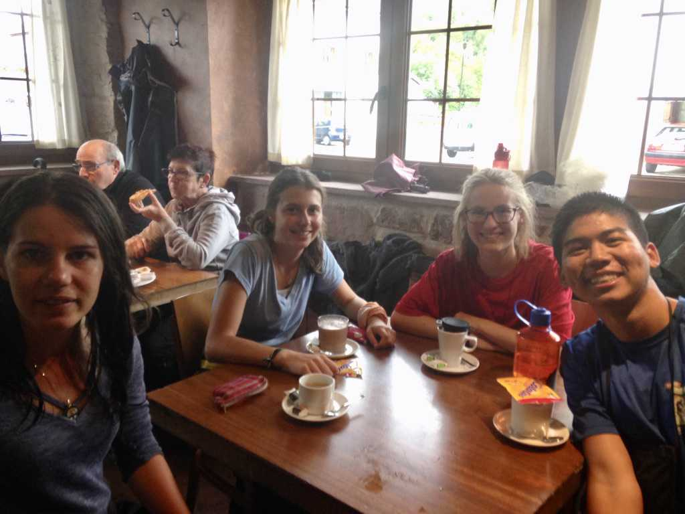

3: Tea
- Through the window I see
- Sun-bathed flowers and untouched rock,
- Blades of grass and untrodden walks,
- Endless possibility.
- I ask of you Time
- To yield your determined hand
- So I may dance
- Forever with Infinity.
I run into Matilde and Franca while departing from Roncesvalles. They’re heading in the opposite direction, back toward the albergue, when they call out to me.
“Phiiiiilll! Heeeey we’re gonna make some tea! Would you like to join us?”
I want to walk on, but the words of a hospitalero echo in my mind: The Camino will give you everything you need. Surrender to the Way. Be open to what comes your way. Say yes to life.
We go back inside and attempt to make tea. Matilde and Franca fiddle with the stove while I watch and provide moral support. Unfortunately the stove is beyond the abilities of my fellow Germans, so I give the task a go myself. I fail miserably and leave to find Matilde and Franca. They’re chatting with a young woman near the vending machines in the adjacent kitchen. She’s beautiful.
I introduce myself and join the conversation. The woman’s name is Marieke. She’s from Belgium and is excited about the fact that we we’re young like her and speak fluent English. Franca and Matilde go back into the kitchen, leaving Marieke and I to each other.
Marieke is in her 2nd year of medical school. She’s on the Camino seeking balance, answers. It’s her 3rd one, though she has never walked its entire length. Her acute sense of self-awareness, her lively buoyancy, her attentive hazel eyes catch me off guard.
The day is gray and rainy, a complete contrast to the sun-painted stroll of the prior. We decide it’s best to walk together.
I walk with Marieke while Matilde and Franca trot in unison a few meters ahead of us. Marieke is wearing a clear, plastic trashbag she claims is a poncho. “That’s not a poncho, that’s a trash bag!” It takes her awhile to warm up to my humor.
Once we’re beyond the formalities, Marieke and I begin to talk about every imaginable topic a human-being like me loves: psychology, purpose, meaning, meditation, freewill, learning, being human. Eventually we exchange the intellectual brevity for emotional depth: we talk about pain and love, relationships and ourselves, the finitude of our time in this world. We get vulnerable.
It’s not long before I realize that I am growing attracted to her. I try to brush it off because I don’t want to feel this way – “this is not why I’m here,” I remind myself. But love and attraction don’t quite adhere to our more sensible selves, and I am reminded to surrender to the Way. “The Camino will give you everything you need,” echoes the Hospilatero. But was this something I needed?
As we walk on, I become increasingly aware of the beauty surrounding us: the colors and smells, the rhythm of my footsteps, the movements of nature. My senses are heightened, I feel incredibly alive. Marieke too is captivated –– by the droplets of water hanging from the leaves, by the dewy smell of the moist air, by the simple joy inherent in the freedom of bodies in motion. Before we know it, we arrive in Zubiri.
The single shower in our albergue is occupied. Matilde and Marieke inform me that there’s a shared shower space in the other building. I’ve never showered with anyone else before and felt shy about the prospect, but I go, believing that it would be unoccupied since we had arrived later in the day. As I make my way toward the building, I see another young pilgrim walking toward it too, clean clothes and a small bottle of shampoo in hand.
“Oh boy. I’m going to have to shower with another dude. Wait, there must be stalls. Yeah, it’s all good.”
There are no stalls. Only a long aisle with a single curtain hiding a row of shower-heads.
We go inside. He acknowledges me with a quick head-nod, and I nod back. We step into the aisle. I turn my back to him and began to take off my clothes. He does the same, I think. I’ve claimed one corner and he the other. And then we start showering, no more than six meters apart. I take my time, hoping that he will finish before me. He must’ve had the same thought, because we are both standing there for what seems like eternity, showering together in silence, the only sound being the clashing of water against exposed skin. Finally I make the first move and finish my shower. He continues. I dry myself off, put my clothes on, and scurry away from the building.
I report my experience to the girls. They’re hysterical. Later I see him again, and we give each other a quick nod of acknowledgement.
“A man on the Camino told me he was walking because he wanted to find peace: peace with himself. Peace with nature. Peace with God.” – Marieke
In the evening the girls and I go to the local bar. There we run into Stefan, the tall, lanky, 18-year-old Texan. He’s been drinking since 2pm and is clearly inebriated. We eat pizza - Spanish pizza! - and banter on about our respective home countries.
Marieke leaves early to catch some alone time, and I go to do the same. Back in the albergue, I reflect on the day and write in my journal. Later I find Marieke sitting in the corner of the kitchen, perhaps also writing about her day.
I talk to a woman in her 60s from the States. We exchange some stories, she about her career and children, I about my recent adventures and worries regarding the future.
She reassures me “It’ll work itself out, so don’t worry so much. Hell, I’m still learning how not to.”
I never grow tired of telling my stories to different people. Each retelling refines or redefines the meaning I derive from my experiences. I thank the woman for listening and sharing.
Franca and Matilde return from the bar, and we join Marieke in the corner of the kitchen. Later we enjoy a community dinner with the other pilgrims, and when the wine has settled in our bodies, we retreat to our room and dream of the coming day. More walking, more talking, more living. It is enough.
